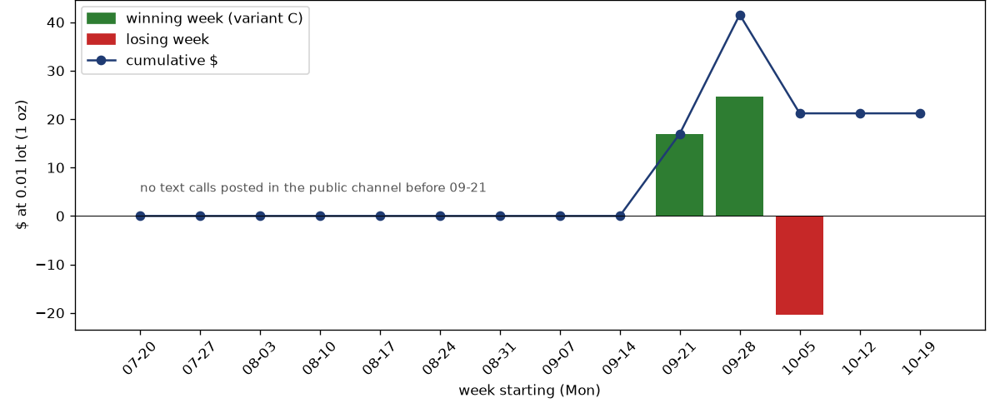

Signal channel audit: test a channel before you copy it
A signal channel shows its wins. Before you put money behind one, I take every call it posted, replay each call on real minute prices with the spread, and show you what 200$ at the minimum lot would have made week by week. You get the numbers, the weak spots and a clear verdict.
What you get
Every call extracted
Entry, stop and targets from every post in the period. Posts that show a result the moment they appear are adverts, not calls, and are kept apart.
A fair replay
Entry at the next minute after the post, and only while the price is still in the entry zone. If the stop and a target fall in the same minute, the stop counts first.
Several ways to manage
All at the first target, half and half, everything to the last target with a break-even stop, a stepped stop, and more, side by side.
Money, not percentages
What 200$ at 0.01 lot would have become, week by week, with the best week, the worst week and the deepest drawdown.
A stress test
The best result without its single best trade, the period split in two halves, and a wider entry tolerance. A result that only survives one of these is luck.
A clear verdict
Copy it, try it on demo only, or leave it, plus what the test could not see: VIP-only calls, deleted posts, a different broker's prices.
Sample: a public gold-signal channel
Three months of a public gold channel's posts were read, and every written call was tested on broker minute prices with the real spread.

| Posts read | 1,566 over three months, most of them thank-you notes, profit screenshots and "target hit" posts |
|---|---|
| Full written calls (entry, stop, targets) | 15, all in the last month |
| Triggered | 11 of 15; one was still open, so 10 closed trades |
| Simplest rule: everything at the first target | −20.2$ over 13 weeks on 200$ at 0.01 lot |
| Best rule: everything to the last target, stop to entry after the first | +21.2$ over 13 weeks (200$ → 221$); worst week −20.4$ |
| Best rule without its single best trade (+35.4$) | about −14$ |
| Entering every call at market, whatever the price | every rule loses |
The channel is not named here. The audit was done with my own private tools; this page shows the method and the result, not the code.
Why test before copying
I have run this kind of test on 20 public signal channels, and none of them passed. When the history is long enough I test two years or more, because a channel that looks perfect for one year can lose money in another.
Want a channel checked?
Send the channel link. You get the weekly chart, the numbers and a verdict in plain language, in English or Arabic.
Message on Telegram WhatsApp Email See my CV